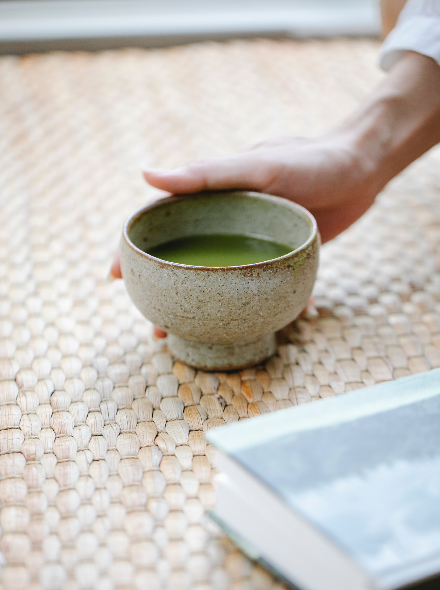

A Matchaholic's guide to matcha
Japanese zen monks first discovered matcha's value to mindfulness when they drank the vibrant green tea before long hours of meditation practice. The monks found that drinking matcha enhanced their ability to meditate and focus for hours on end.
Zen and matcha
The Traditional Method
'Matcha' tea made its first appearance 1,000 year ago discovered by a Buddhist monk, Myoan Eisai, who realised that drinking matcha greatly improved his Zen meditations by producing a state of calm alertness. In fact today we know that matcha contains L-theanine which intensified the productions of alpha waves in the human brain.
Eisai, has spent most of his life studying Buddhism in China, and in particular the principles of Chan, “zen”. In 1191, Eisai returned to Japan for good, bringing with him the tea seeds that helped him so much during his studies and long meditation sessions. He as well brought with him the Zen Buddhist methods of preparing powdered green tea, that then evolved into the tea ceremony we know today. Matcha was produced in extremely limited quantities and was a symbol of luxury. It was considered a medicine and a meditation drink that provides energy and mental alertness for samurai and monks. Samurai warriors also drink matcha to build their energy and stamina before fighting. Precious matcha has been for long time the preserve of the emperor, samurai and the Japanese elite.
Later on, in the 15th century, matcha started to be seen as a more spiritual pursuit among common people as well, going hand in hand with the quest for simplicity. Simplicity was preached by the monk Murata Junko, founder of the Japanese tea ceremony as we know it today. It was one of his students, Rikyu, who defined the four principles of the Japanese tea ceremony. Since then the consumption of powdered green tea has been the basis of a pure lifestyle, Chado or "Sado" (the way of tea). The Chado is what is today called the green tea ceremony and is inspired by the rituals of Zen Buddhism. The tea ceremony is a true art of living in Japan and matcha is still at the heart of this ceremony today.
